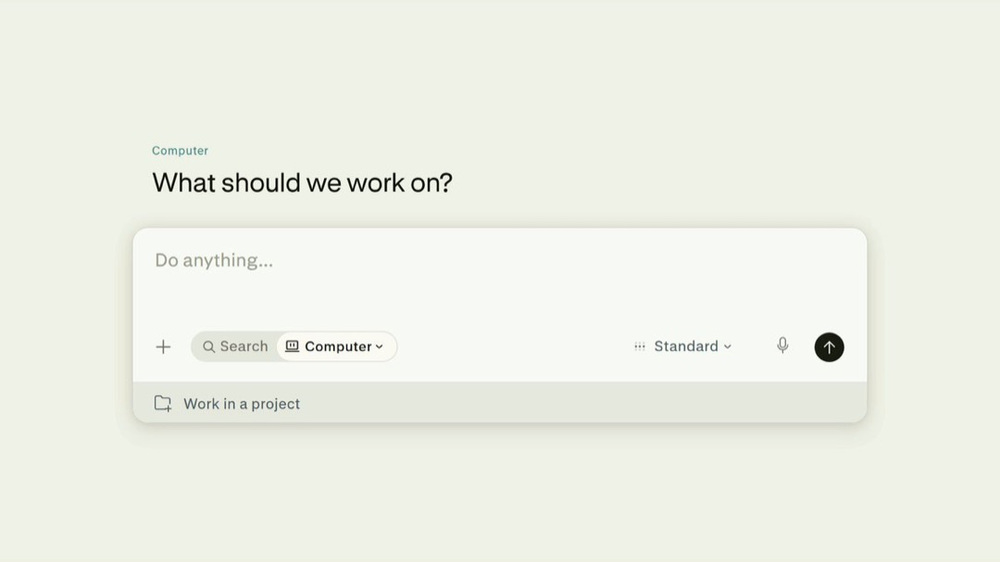
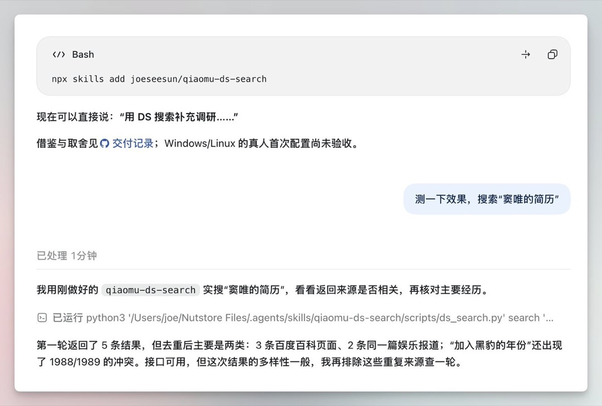
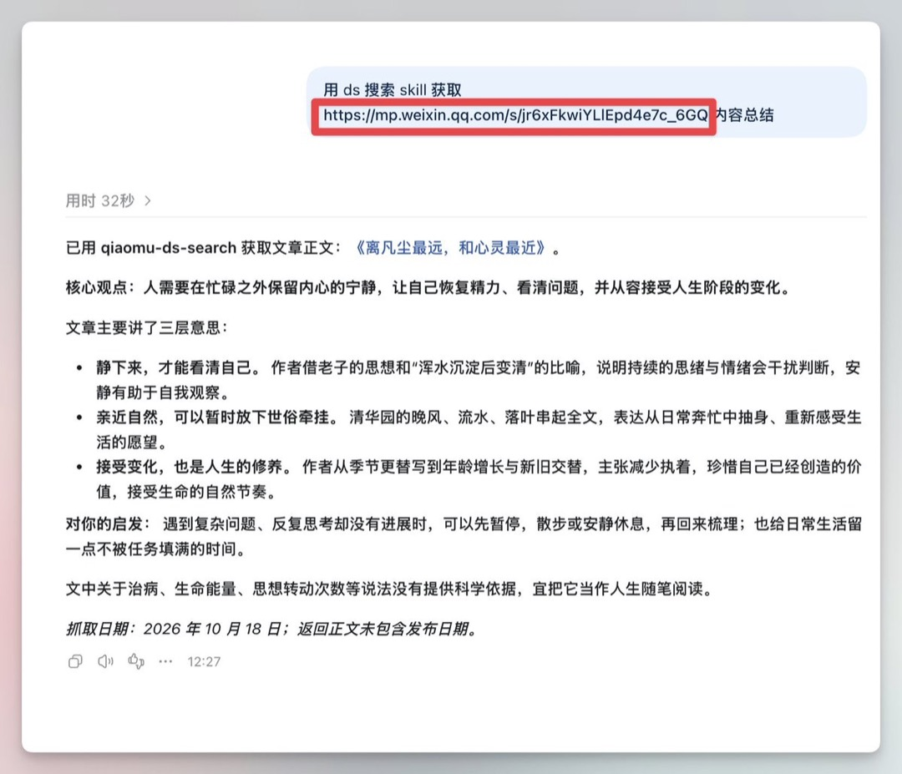

本期速览
02 DeepSeek v4.1 Flash 开放自研搜索API
03 Perplexity 用REA逆向复刻5款软件
05 pi 会话文件缺乏跨进程互斥保护
01｜微软与CMU推出PRAISE工程师带教项目
来源（X） · @Xudong07452910 · 2026-10-18 10:16
微软和 CMU 刚推出 PRAISE，专门解决一个 AI Coding 之后很尖锐的问题：如果初级工程师以前靠改 Bug、写基础代码、做测试慢慢「练级」，这些工作现在越来越多被 AI 接走，下一代 Senior 要怎么成长？
他们借鉴了护理行业的临床带教模式，让初级工程师直接和资深工程师结对。AI 照样用，但学习重点放到理解系统、验证假设、判断什么时候该用 AI，以及对最终结果负责。CMU 还配了正式课程和小组讨论。
我觉得这个思路还是蛮有意思的。AI 时代教育要补的就是被自动化拿走的那段「成长路径」。
原文
https://commandline.microsoft.com/praise-preceptor-ai-accelerated-software-engineering-cmu/
02｜DeepSeek v4.1 Flash 开放自研搜索API
来源（X） · @bourneliu66 · 2026-10-18 00:30
简言之：是好模型！性价比高，能力强于预期！
1.我怀疑（不负责任的猜测，我没有证据）它蒸馏了大量 GPT-6-Astra 的数据，在写思考写代码的时候，文风和Astra一模一样
2.用来做视频（对，就是最近流行的“用代码生成视频”）非常能打。可以说是仅次于Claude Opus 5.5/Sonnet 5.5模型，并且超过Claude Haiku 5.5。仅这一点来说， 是国产其他模型暂时难以望其项背的。
3. 用来做动效也很厉害 我想原理应该和做视频一样。
4. 思考Effort如果开Max，内心戏非常多非常长，思考过程比别人家的Max更加Max。不过打开 Max 后的效果确实好。考虑到它的价格便宜，我建议如果你用来做 AI 编程的话，直接打开 Max档位。
5. 一个非常值得点赞的事情：DeepSeek的全网搜索是自己做的，不再调用外部某些等容易被所谓的“GEO”垃圾信息干扰的搜索引擎。这个搜索 API 目前也开放了，如果需要，你可以单独调用它。
6. 自动化操作电脑的能力挺棒。
7. 同样的任务消耗的 token 比上一代略少。虽然有别人说比上一代少一半，但是我实测没有那么夸张，大概是减少 15% 左右。输出速度提升了 15%~20%
8.仍然开源
9.一条新的斩杀线诞生了
10.如果用一句话总结的话 我认为应该是：DeepSeek自此从一个聊天模型变成了能独立完成复杂工作的 Agent 模型。
03｜Perplexity 用REA逆向复刻5款软件
来源（X） · @0xLogicrw · 2026-10-18 10:35
Perplexity 一口气展示了 5 款复刻作品，全部提供可在线体验的网页版本：
1. Figma：支持图层、自动布局、多人实时协作，以及账号登录和跨设备同步。
2. LibreOffice Calc：支持编辑单元格、编写公式，修改数据后图表自动更新。
3. Photopea：类似网页版 Photoshop，支持图层、蒙版、调色和文字编辑。
4. Harvey：面向法律工作的 AI 工具，可以搜索合同、比较不同版本，并根据指定规则标记条款，附上原文引用。
5. Audacity：支持音频剪辑、混音、音量调整、淡入淡出，以及导出 WAV 文件。
REA 由开发者 morluto 开源，能够配合 Ghidra、Hopper 等工具，分析程序内部的函数、调用关系和运行行为，也能检查网页及 JavaScript、Electron 应用。不过，这并不意味着 AI 已经能完整复制商业软件。REA 作者明确表示，工具无法保证还原原始源码。
Perplexity 为这项功能提供限时免费额度。10 月 31 日前，使用 `/reverse-engineer` 的任务可享受每人最多 10,000 Credits 的免费额度。
引用内容
Computer @AskPerplexity
中文译文
REA (Reverse Engineer Anything) by @morluto 现在是 Computer 中的一个技能。
让 Computer 对一个应用进行逆向工程，它会在没有源代码的情况下检查该应用的运作方式，然后构建出一个可工作的版本。
使用 /reverse-engineer 的任务在10月31日之前免费，每位用户最多可获得10,000积分。
以下是 Computer 用它制作的5个应用，可在限定时间内试用：
1) Figma：支持图层和自动布局设计，以及登录、跨设备同步和多人协作编辑。试用：http://ui-editing.pplx.app
原文
REA (Reverse Engineer Anything) by @morluto is now a skill in Computer.
Ask Computer to reverse-engineer an app and it inspects how the app works without its source code, then builds a working version.
Tasks that use /reverse-engineer are free through October 31, up to 10,000 credits per user.
Here are 5 apps Computer made with it, available to try for a limited time:
1) Figma: Design with layers and auto-layout, plus sign-in, cross-device sync, and multiplayer editing. Try it: http://ui-editing.pplx.app

04｜DeepSeek 推出搜索与抓取API
来源（X） · @vista8 · 2026-10-18 12:29
甚至还能直接读微信公众号文章
昨天推出了Search 和 Fetch API，
5 元可以请求 1000 次，Search（网页搜索接口）和Fetch（网页抓取接口）都是这个价格，合 0.75 美元 / 千次。
写个 Skill 方便调用，安装指令：
npx skills add joeseesun/qiaomu-ds-search


05｜pi 会话文件缺乏跨进程互斥保护
来源（X） · @htt_keyboarder · 2026-10-18 11:10
我看了一下 pi 的实现，发现了一个有趣的事实：针对两个进程同时恢复、写入同一个会话文件，它没有实现跨进程互斥或冲突检测
1. 先看 pi 的会话文件长什么样
以我本地的聊天记录为例：
第1行 type=session id=01a0d6d8...（会话头：版本、目录、ID）
第2行 type=model_change id=ccab394a parentId=null
第3行 type=thinking_level_change id=45a13d8c parentId=ccab394a
第4行 type=model_change id=24eb8356 parentId=45a13d8c
第5行 type=message(用户) id=71e92a01 parentId=24eb8356
第6行 type=message(助手) id=82fa3b02 parentId=71e92a01
...（假设共176行，除会话头外，各条目串成一条链）
三点：
- 持久化会话保存在 JSONL 文本文件里，一行一个条目。你说了句话、模型回了话、切了个模型、压缩了一次上下文，正常写入路径都是另起一行记一笔，不修改旧行
- 除会话头外，每个条目都写着自己是谁（id）、接在谁后面（parentId）。上面的消息链是第 2 行 ← 第 3 行 ← 第 4 行 ← 第 5 行 ← 第 6 行……，会话头不参与这条链
- 通过 /tree 导航到历史节点后继续聊天，可以在原文件里形成新分支，不需要修改旧行。所以在 pi 眼里，这个文件可以是一棵分叉的树
2. resume 的时候 pi 做了什么
三步：
- 打开你选的那个 .jsonl 文件
- 从头到尾读一遍，176 行全部装进自己进程的内存里
- 开始聊天
注意第 2 步：pi 进程里有一份历史副本，以及自己的当前位置 leafId。之后每新增一个条目，它都以自己的 leafId 为 parentId，更新内存，再追加到磁盘文件末尾。它不会自动读入另一个进程刚写入的条目，两边的上下文不会实时同步
也就是说，两个进程虽然用的是同一个会话，但是它们内存里的消息列表是独立的，只不过都往同一个磁盘里的 JSONL 文件追加，这才导致了磁盘文件的逻辑混乱
这条会话恢复和写入路径没有检查“这个文件是不是有别的进程正在用”，也没有通过锁或版本比较阻止并发写入
3. 剧本：两个终端同时 resume 这个会话会发生什么
场景一：两边同时聊天
终端 A 和终端 B 都 resume 了同一个会话。此刻两边内存里的历史一模一样，都是那 176 行，链尾是同一个 id=xxxxxxx（第 176 行）
你在 A 里说“帮我看看这个 bug”，在 B 里说“写个测试”：
磁盘文件：
...前176行（两边共同读到的）
第177行 用户"帮我看看这个bug" parentId=第176行 ← A写的
第178行 用户"写个测试" parentId=第176行 ← B写的
第179行 助手(A的回答) parentId=第177行 ← A写的
第180行 助手(B的回答) parentId=第178行 ← B写的
这是一种可能的写入顺序，省略了其他条目，并假设每条 JSON 记录都完整写入。两边正常写盘用的都是追加模式：_persist() 中调用 appendFileSync(this.sessionFile, 新行 + "\n")
但追加模式不能直接等同于整条 JSON 记录在所有并发条件下都不会损坏。pi 在这里没有实现记录级互斥或事务；Sync 也只表示当前进程同步等待调用完成，不是跨进程的锁
用具体动作解释：
- 追加写：把我的内容接到文件末尾
- 同步调用：我这个进程等写入调用完成，再往下执行
- 跨进程锁：我使用会话期间，另一个进程必须等待或被拒绝
pi 的正常会话追加路径有前两项，没有第三项。A 写字的时候自己停下来等写完，并不意味着 B 也被要求停下来。即使两边每一行都完完整整写进文件，前面说的历史分叉仍然会发生
简单说就是，如果跨进程了，那我就不保证解决冲突了
pi 会把消息追加到文件，但不会因此让两个进程共享最新上下文，也不会阻止另一个进程同时操作这个会话
在上面这个例子里，第 177 和 178 行都接在第 176 行后面，原本的一条链变成了从同一个点长出两个分叉。A 的回答沿着 A 的历史生成，B 的回答沿着 B 的历史生成，双方都不知道对方的新消息
这就是树结构能容纳的情况：只要记录完整、条目 ID 没有冲突，这些消息可以表示成合法分支。但能表示分叉不等于解决了并发冲突，两边并没有被协调成同一段连续对话
下次恢复时，_buildIndex() 会把文件中最后一个非会话头条目的 ID 设为 leafId，构建上下文时再沿 parentId 回溯
在上面的例子里，默认恢复的是 B 的分支，A 的分支仍保留在文件中。它不会因为检测到并发分叉而主动询问选哪一条
需要查看或切换分支时，可以使用 /tree。这也不代表仍在运行的 A、B 会自动刷新出对方的分支。
场景二：一边触发了整文件重写
先说一下整文件重写的意思：不止在末尾加一行，而是把整个文件的内容重新写一遍
普通追加：
原文件：第 1 行、第 2 行、第 3 行
写完后：第 1 行、第 2 行、第 3 行、第 4 行
整文件重写：
先把文件清空
再把内存中的第 1 行、第 2 行、第 3 行……重新写进去
追加是在本子后面接着写；整文件重写是先擦掉本子，再照着自己手里的副本抄一遍
这解释了为什么可能丢记录：如果别人在你的副本形成之后又写了一行，你擦掉本子重新抄时，副本里没有那一行，它就丢了
pi 在老版本会话文件升级格式时会重写原文件，例如 v2 → v3 迁移（会话文件格式升级）。_loadEntries() 检测到迁移后调用 _rewriteFile()，核心逻辑可以简化为：
const fd = openSync(this.sessionFile, "w"); // ← 关键就是这一个字母 w
for (const entry of this.fileEntries)
// 把"我内存里记的历史"从头写一遍
writeFileSync(fd, JSON.stringify(entry)+"\n");
"w" 模式的含义：打开的一瞬间，文件先被清空成 0 字节，然后从头写
一种可能的时序是：
1. A 读到了旧版本历史，尚未开始重写
2. B 也读到旧版本历史，先完成迁移，然后追加了一条新消息
3. A 开始重写，以 "w" 打开同一个文件，将其清空
4. A 写回自己之前读到的历史，其中没有 B 的新消息
B 的这条消息就从会话文件中丢失了。树结构无法阻止这种覆盖，也无法把被覆盖的记录恢复出来